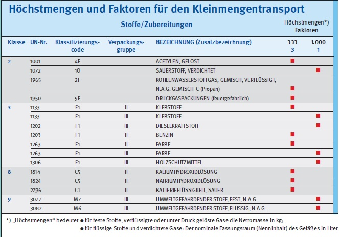
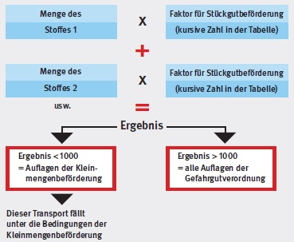
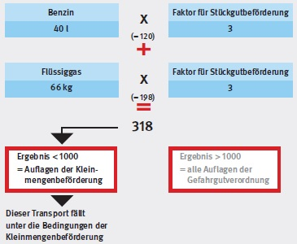
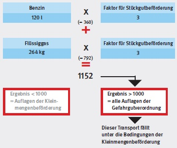

Um beim Transport gefährlicher Güter die Bedingungen der Kleinmengenregelung zu erfüllen, sollten Sie darauf achten, dass Sie keine größeren Mengen auf einem Fahrzeug mitnehmen, als in folgender Tabelle beispielhaft angegeben. Die Werte gelten für den Transport eines Stoffes oder eines Produktes.

Transportieren Sie mehrere Gefahrgüter auf einem Fahrzeug (zum Beispiel Benzin und Flüssiggas), kommen Sie nicht umhin zu rechnen.
Allerdings können Sie auf die folgende
Faustformel zurückgreifen, die die
Transportberechnung nicht zur höheren
Mathematik werden lässt:
Einfach geht es auch mit dem Modul "Gefahrgut -
transport" auf www.wingisonline.de.

Dazu zwei Rechenbeispiele:
| Rechenbeispiel 1: Sie transportieren zwei Kanister Benzin mit zusammen 40 l und zwei Gasflaschen Flüssiggas mit zusammen 66 kg. |
Sowohl Benzin als auch Flüssiggas haben den Faktor 3 für Stückgutbeförderung (siehe Tabelle). |
Nach der Faustformel ergibt sich:

| Rechenbeispiel 2: Sie transportieren sechs Kanister Benzin mit 120 l und acht Gasflaschen Flüssiggas mit 264 kg. |
Sowohl Benzin als auch Flüssiggas haben den Faktor 3 für Stückgutbeförderung (siehe Tabelle). |
Nach der Faustformel ergibt sich:
